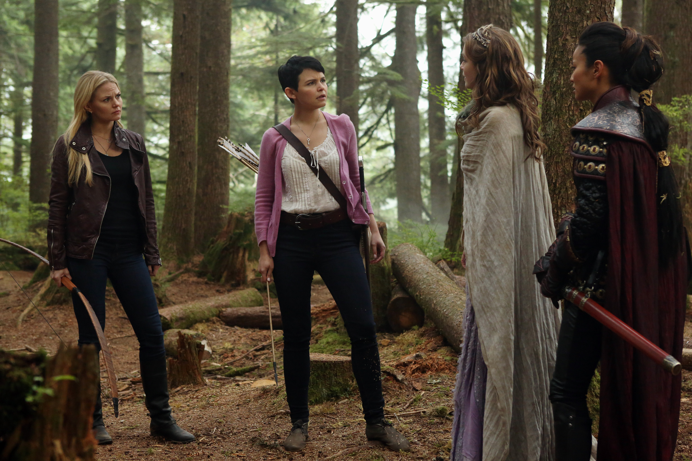

Жизнь 28-летней Эммы Свон меняется, когда ее 10-летний сын Генри, от которого она отказалась много лет назад, находит Эмму и объявляет, что она является дочерью Прекрасного Принца и Белоснежки. Само собой разумеется, у мальчишки нет никаких сомнений, что параллельно нашему существует альтернативный сказочный мир — город Сторибрук, в котором в итоге оказывается Эмма. Постепенно героиня привязывается к необычному мальчику и странному городу, жители которого «забыли», кем они были в прошлом. А все из-за проклятия Злой Королевы, с помощью которого колдунья остановила время в сказочной стране. Однако стоит протянуть руку — и сказка оживет. Битва за будущее двух миров начинается, но, чтобы одержать победу, Эмме придется принять свою судьбу.
Реальный и Сказочный мир соединились. И теперь, когда проклятие разрушено, сказочные персонажи очнулись и вспомнили, кем были. К их ужасу, они, по каким-то причинам, не вернулись назад в свой мир. Но что ещё хуже, Румпельштильцхен, он же мистер Голд, борясь с Реджиной за власть, вернул магию в город. У магии есть своё место в Зачарованном лесу, но её появление в Реальном мире, в Сторибруке, может привести к необъяснимым и непредсказуемым последствиям. Теперь сказочные персонажи должны противостоять магии, чтобы вернуться домой. Новые герои, новое знакомство со старыми, и те, кому можно было доверять, могут пойти против всех.
Часть 1: Главное событие первой половины третьего сезона — это спасение Генри. Но Нетландия гораздо более тёмное место, чем мы помним по тем сказкам о летающем юноше в стране, где никто никогда не взрослеет. Чтобы выполнить миссию героям придётся столкнуться с врагом более мощным, чем сам Тёмный Маг. Что Питер Пэн хочет от Генри? Смогут ли наши герои-спасители отложить в сторону свои разногласия и работать вместе? Смогут ли Аврора, Мулан и принц Филипп оказать необходимую медицинскую помощь Нилу/ Бею, чтобы он мог воссоединиться с семьёй? Появятся новые герои сказки, также мы узнаём много нового про уже известных персонажей. Нетландия сериала станет лихорадочным сном, который просто так не сломить.
Часть 2: После финальных событий первой половины сезона прошёл целый год, проклятие Питера Пэна всё ещё в силе. Сторибрука больше не существует, но так ли это на самом деле? Каким-то образом наши герои нашли путь назад в Город. Тем временем Эмма и Генри счастливо живут в Нью-Йорке с воспоминаниями о ложном прошлом, не помня ничего о минувших событиях. Внезапно на пороге их дома появляется Крюк. Он заявляет, что Зачарованный лес в опасности. Чета Прекрасных и Сторибрук снова нуждаются в Спасительнице, но всё зависит от Киллиана. Именно он должен помочь ей вернуть воспоминания. Пират делает всё, чтобы удачно завершить свою важную миссию. Меж тем в Зачарованном лесу мы узнаём, что случилось с героями сразу после того, как проклятие было активировано. Белоснежка осуществила свою мечту стать матерью вновь — она беременна. Однако зло не дремлет. Королевству угрожает Злая Ведьма Запада (она же Великая Ведьма), которая желает отомстить Реджине. Хотя в этот раз будет всё по-другому, ведь надвигающаяся беда страшнее всех прочих. Новый враг сильнее и могущественнее прежних, а коварство его не знает предела.
Часть 1: Новые умопомрачительные приключения Эммы Свон, Белоснежки, Прекрасного Принца, Злой Королевы, Крюка, а также других представителей Сказочного Мира. Вместе они будут противостоять силе, столь тёмной, зловещей и непредсказуемой, что даже сам Румпельштильцхен не осмелится вступить с ней в схватку единолично, — Снежной Королеве… В штате Мэн жители небольшого городка Сторибрук даже не подозревают, что приготовила для них Эльза. В прошлом — в королевстве Эренделл, которым правит королева Эльза, мы узнаем, что случилось с ней и её сестрой Анной, а также женихом Анны Кристоффом. Мы сможем узнать ответ на вопрос — почему Эльза все-таки была узницей Румпельштильцхена? Между тем, в настоящем Эмма вернула из прошлого жену Робина Гуда Мэриан, тем самым помешав отношениям Реджины и Робина. Пойдет ли Реджина по дороге зла, снова став Злой Королевой? Сделает ли она все возможное, чтобы отомстить Эмме за своё разрушенное счастье? В это время новобрачные Белль и Румпельштильцхен продолжают любить друг друга. Но Румпельштильцхен хранит тайну от Белль, которая может навсегда разрушить их счастье. Румпельштильцхен, он же мистер Голд, все ещё владеет Кинжалом Темного. Смогут ли Эмма и Крюк быть вместе? Удастся или нет им вывести свою любовь на новый уровень? Мэри Маргарет и Дэвид растят маленького принца Нила, стараясь воспитать его храбрым и смелым. Но они все ещё грустят по прошлому. Прошлому, в котором так и не смогли вырастить Эмму. Генри как никогда счастлив, ведь обе его матери в Сторибруке. Но не все так гладко. По его венам течет кровь его биологической матери Эммы, Спасительницы, и кровь его дедушки со стороны отца, Румпельштильцхена, нынешнего Темного Мага. И эта кровь, которая объединяет в себе свет и тьму, будет постоянно испытывать его. И, наконец, Уилл Скарлет («Однажды в стране чудес»), бывший участник отряда Робина Гуда, который путешествует по многим мирам, под конец оказывается в Сторибруке. Его судьба переплетается с событиями происходящими в городе, а таинственное прошлое толкает к неизвестному будущему. Новые персонажи посетят город Сторибрук, старые знакомые предстанут в неожиданном, новом свете. Но не всем им можно доверять.
Часть 2: Реджина решает найти таинственного Автора, чтобы он написал ей счастливый конец. В этой нелегкой миссии, операции «Мангуст», ей помогают Эмма и Генри. Однако не все так просто: ведь не только они хотят найти Автора книги сказок. Румпельштильцхен, изгнанный своей супругой Белль из города, решает воссоздать группу злодеек, Королев Тьмы — Малефисенты, Урсулы и Круэллы де Виль. Он намерен вернуться в город Сторибрук, дабы найти Автора и свой счастливый конец. Правда, все не так просто. Чтобы заполучить этот конец, ему нужно переманить Эмму на сторону зла. Чтобы узнать, что именно замышляет Голд, Реджина, рискуя жизнью, втирается в группировку злодеев, став шпионкой света и мрака одновременно и в действительности будучи на стороне света. Между тем в семье Прекрасных не всё спокойно. Белоснежка с мужем скрывают от Эммы важный секрет. Вскоре они понимают, что совершают ужасную ошибку, скрывая от дочери прошлое. Супруги рассказывают ей важную тайну. Эмма в ярости и больше не желает и видеть родителей. Тем временем Румпель ищет волшебную дверь, что нарисована на холсте в книге. Генри, понимая, что он в опасности, убегает в дом своего деда, где находит ключ от двери. Но внезапно появляются Реджина, Круэлла и Малефисента. Последние велят мальчику отдать им нужную страницу, однако Королева, назвав сына полным именем, намекает ему на фальшивку. В это время Голд приходит к своей возлюбленной (Малефисента усыпила весь город) и несмотря на то, что она спала, рассказывает, что если он не заставит Автора написать ему счастливый конец, то умрёт. Наконец Реджина отдает Голду страницу, но тот сразу догадывается, что она фальшивая, и троица понимает, что Королева их ловко обманывала. Малефисента её усыпляет, и они уносят Реджину в её же склеп.
Часть 1: Эмма приносит себя в жертву ради защиты всех, кого она любит, и всего города. Теперь Эмма Свон — это новый Темный страж. Эмма пытается бороться с мраком, но сопротивляться силе Темного не просто и становится все сложнее... Герои и злодеи Сторибрука должны объединить свои силы, чтобы спасти Эмму, пока мрак окончательно не поглотил её. Для этого им приходится объединиться с Великой Ведьмой Зелиной и отправиться в Камелот, на поиски Мерлина. В Сторибруке Белль пытается вернуть к жизни своего супруга, который лежит в коме после потери сил Темного стража. Голубая Фея дарит Белль волшебную розу, которая показывает оставшееся время жизни её мужа. Она решается отправиться в Камелот вместе с Реджиной, Зелиной, Прекрасными, Крюком, Генри, Бабушкой и гномами, чтобы спасти Эмму и помочь Румпельштильцхену. Тем временем городу вновь угрожает опасность, но кто защитит его теперь, когда сама Спасительница поглощена мраком?
Часть 2: Эмма, Голд и команда героев отправились в Преисподнюю, где они столкнутся с врагами и даже с семьей, в числе которых будут Кора и Питер Пэн. Герои планируют спасти Крюка, но это лишь верхушка айсберга куда более запутанной истории, ведь Подземное царство Аида — это не просто другой мир... Эмме придется заново примириться с ролью Спасительницы. Дэвид и Белоснежка понимают, что повторяют свою прошлую ошибку — отправившись в Преисподнюю, они вновь оставили своего ребенка, малыша Нила. Между тем Реджине предстоит «интересная» встреча с матерью, особенно если вспомнить предсмертные слова Коры. А в это время Аид отдает приказ укрыть своё царство от кого бы то ни было, в особенности от тех, кто не принадлежит Преисподней... Тем временем в Сторибруке Белль пытается спасти дочь Робина Гуда. Румпельштильцхен решает перенести жену вместе с ребенком и Зелиной в Преисподнюю. Объединившись с Руби, они стараются одолеть Аида... Но смогут ли они победить бога Подземного царства?
Часть 1: Когда похоже, что Сторибрук может наслаждаться спокойствием, ему снова угрожают темные силы. Зловещий мистер Хайд, теперь разъединенный с доктором Джекиллом, прибыл и привел всех своих соплеменников из Края нерассказанных историй. Хуже того, темная половина Реджины, Злая Королева, продолжает существовать, даже несмотря на то, что её сердце разбито. Она объявила войну героям и разделила Белоснежку и Дэвида, наложив спящее проклятие на их разделенное сердце. Тем временем Эмма раскрывает секрет о роли Спасителя, и это меняет её жизнь навсегда, а Румпельштильцхен снова пытается завоевать Белль, чтобы они могли стать семьей для своего будущего ребенка.
Часть 2: Позже Черная Фея, мать Румпельштильцхена, похищает своего внука Гидеона, что еще больше осложняет жизнь жителей Сторибрука. Потом он прибывает уже взрослым человеком, и как выясняется, именно ему суждено убить Спасительницу. А Эмма, Реджина и альтернативная версия Робина Гуда возвращаются в Сторибрук. События приводят к Черной Фее, которая контролирует Гидеона его сердцем. Появившись в городе, она начинает войну между светом и мраком, что в конечном счете ведет к Финальной битве.
Генри Миллсу уже исполнилось 16 лет. Операция Кобра закончилась. Генри дописал свою книгу, вернул её в поместье волшебника, и нашёл там другие книги — о знакомых ему сказочных персонажах, но в других изложениях. В стремлении найти собственную сказку, Генри открывает портал, прощается с Реджиной и переносится в другой мир. Далее события развиваются по аналогии с первым сезоном — мы видим параллельно как реальность этого мира, так и прошлое «мира сказки». Много лет спустя после прощания с родными, Генри на мотоцикле врезается в карету Золушки и влюбляется в неё, а она в него. Но Золушка исчезает, и Генри вынужден призвать на помощь Реджину, Крюка и Эмму. Параллельно мы видим, что на весь сказочный мир наложено заклятье, сославшее всех героев в мир без волшебства, где все герои забыли, кто они есть на самом деле. В это время к Генри Миллсу приходит девочка по имени Люси и заявляет, что она его дочь. Она заманивает его в Гиперион Хайтс (район города Сиэтл), чтобы он победил Леди Тремейн и снял заклятье со сказочных героев, но оказывается, что всё намного хуже, чем кажется на первый взгляд. Страшная правда перевернет все сверх на голову: неожиданный поворот сюжета раскроет настоящего злодея. Ситуация начинает накаляться ведь теперь на кону жизни.